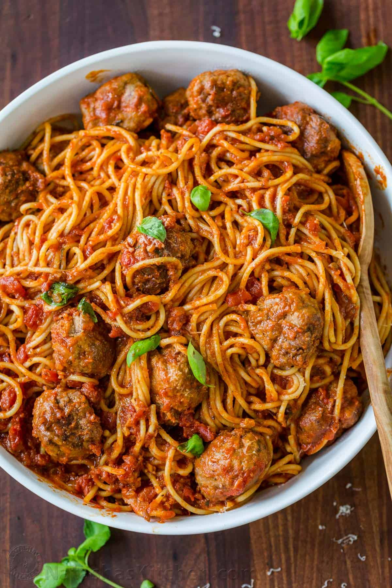

Spaghetti and Meatballs

Description
This recipe is used to make a delicious spaghetti and meatballs that
uses savory flavors and organic ingredients to ensure a healthy,
mouthwatering meal.
ingredients
- White bread
- Lean ground beef (7% to 15% fat content)
- Freshly grated parmesan
- Garlic
- Chopped yellow onion
- Pasta noodles
Steps:
Meatballs:
- Combine diced crustless bread pieces with
2/3 cup water and set aside for 5 minutes
then mash together with a fork.
-
In a large mixing bowl (I use my KitchenAid
mixer to do the work), add: 1 lb ground beef,
1 lb sausage, 1/4 cup parmesan cheese, 4 minced
garlic cloves, 1 tsp salt, 1/2 tsp black pepper,
1 egg and the mashed moist bread crumbs.
Mix until well combined.
-
Form into 1 1/2″ meatballs
(about a flat ice cream scoop’s worth of meat).
Dredge/roll meatballs in flour. Heat a deep,
large, heavy skillet or a Dutch oven over medium
heat with about 3 Tbsp oil. Add meatballs in
batches so you don’t crowd the pan and saute
until browned on all sides (6 min total or 2 min per side).
Remove meatballs to a separate dish and set aside
(don’t worry about cooking through at this point).
Marinara Sauce:
- In the same skillet over medium heat, add more oil if
needed and saute 1 cup chopped onion stirring often until
soft and golden (5 min). Add 4 cloves minced garlic and
stir 1 minute.
-
Stir in 2 cans of crushed tomatoes and 2 bay leaves.
Bring to a light boil
(stir to make sure it’s actually boiling and hot and
not just letting bubbles to the surface).
- Add meatballs back into the pan with tomato sauce,
partially cover and cook at a gentle simmer for 30 min,
turning the meatballs occasionally. Meatballs will be
tender and sauce will be thickened. 5 minutes before
your sauce is done, stir in chopped fresh basil and
add salt and pepper to taste.
Finishing Details:
- Cook pasta according to package instructions until
aldente or softer if your family loves it that way!
Truth be told, I love slightly overcooked pasta.
Drain pasta and return to the empty pot.
-
Pour sauce and meatballs over spaghetti and toss gently to combine.
To serve family-style, transfer to a large platter,
garnish with more parmesan cheese and fresh basil
leaves if desired and serve hot.